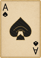
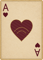
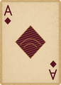
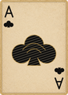
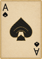
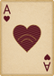
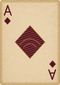
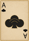

The 12 Queen A courts, including the corrected kings, have been approved. These aces reuse the approved paper and common card frame. All large suits, A ranks, mirrored indices and engraved ornament are authored SVG paths; no AI-generated suit or lettering is used.
View at 100% browser zoom. Fixed actual display sizes below. These are approval proofs; no assets are installed.








The revised ace group is approved; the card back has its own approval gate. Later groups remain frame, backgrounds, bunting, candles and plaque, in that order.